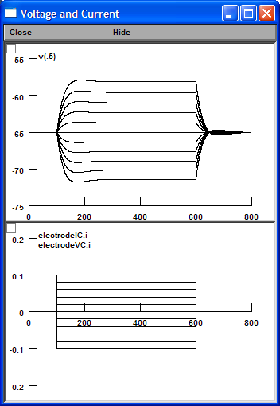
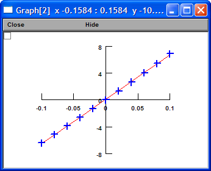
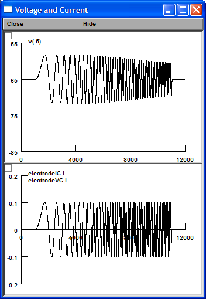
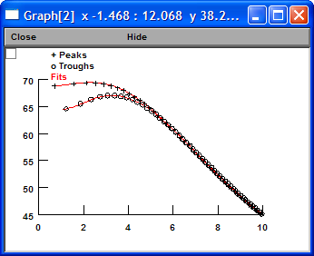
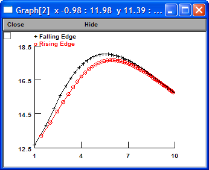
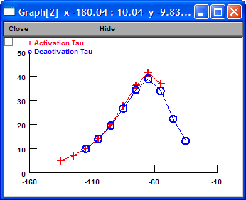

| Without Ih | Ih in Sonia's model | Altomare's model | |
| gbar (S/cm2) | 0 | 4e-5 | 1.1e-5 |
| Time Constant (ms) | 30.0 | 24.3 | 24.9 |
| Rin (MΩ) | 95.5 | 56.9 | 66.0 |
| Rebound Slope (mV/mV) | 0.00 | -0.17 | -0.05 |
| Temporal Summation (%) | 43.7 | 11.0 | 16.9 |
| Depolarizing Resonance Frequency (Hz) | 0.6 | 3.5 | 2.3 |
| Hyperpolarizing Resonance Frequency (Hz) | 1.1 | 4.5 | 3.3 |
| Vhalf (mV) | -81.1 | -69.0 | |
| k (mV) | 7.90 | 9.55 |
Conclusion: Both models are good.
Create "h_Altomare_2001.mod".
Create "nrnmech.dll".
Start "Main.hoc".
Click "Pulse (1 ms)" button.
Click "Initiate & Run" button.
Change "gbar_h" to 1.1e-5 so the resting potential is at -65 mV.
Click "Fit Decay" button.
Tau = 24.9 (ms).
Click "Current Step (500 ms)" button.
Click "Run Step Family" button.

Click "Measure Rin (LR)" button.
Rin = 66.0 (M Ohm).

Click "Measure Rebound Slope (LR)" button.
Rebound Slope = -0.05 (mV/mV).
Click "Five Alpha EPSCs (20 Hz)" button.
Click "Initiate & Run" button.
Click "Measure Temporal Summation" button.
Temporal Summation = 16.9 (%).
Click "Chirp" button.
Click "Initiate & Run" button.

Click "Characterize Chirp Response" button.
Click "Fit Impedance Amplitude" button.

Depolarizing Resonance Frequency = 2.3 (Hz)
Hyperpolarizing Resonance Frequency = 3.3 (Hz)
Click "Plot Voltage Lag" button.

Click "Voltage Clamp" button.
Click "Run Activation Step Family" button.
Click "Fit GV Curve" button.
vhalf = -69.0 (mV)
k = 9.55 (mV)
Click "Run Deactivation Step Family" button.
Click "Plot Tau" button.
